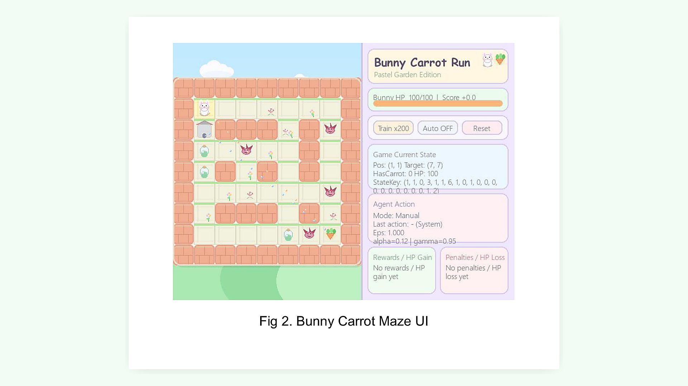

Bunny Carrot Maze Based on Q-Learning

Problem
Built a reinforcement-learning maze game where a bunny must collect a carrot before reaching the exit while avoiding traps and managing HP. The main challenge was delayed reward learning in mazes with different levels of long-horizon difficulty.
Data
The environment uses procedurally generated grid mazes with randomized walls, carrot, exit, poison traps, and medkits. I evaluated the agent on three generated maps using win rate, reward, training logs, and step count.
Approach
Implemented a Python and Pygame environment plus a tabular Q-learning agent with epsilon-greedy exploration, Q-table updates, and state encoding for position, key status, HP, target direction, nearby walls, and nearby traps.
Outcome / Impact
The agent reached 100% final win rate on Map 1 and Map 2 and reduced solution steps from more than 199 to about 23-24. Map 3 exposed the limitation of tabular Q-learning on longer and more complex maze topology.
My Contribution
Sole author and developer. I designed the game mechanics, UI, maze generation, reward logic, Q-learning agent, experiments, and analysis of success and failure cases.